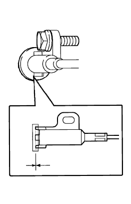

コラムシフト パーキング ロックケーブルASSY 車上点検 |
| 1. コラムシフト パーキング ロックケーブルASSY機能点検 |
ケーブルが不自然に曲がっていないことを点検する。
イグニッションキーをACCにし、ブレーキペダルを踏んだ時シフトレバーが操作できることを点検する。
イグニッションキーをACCにし、ブレーキペダルを離した状態で、シフトレバーがPレンジ以外に操作できないことを点検する。
イグニッションキーをLOCKにしたとき、ブレーキペダルを踏んでもシフトレバーがPレンジ以外に操作できないことを点検する。
シフトレバーをPレンジ以外にへシフトした時、イグニッションキーがLOCKの位置に戻せないことを点検する。
| 2. コラムシフト パーキング ロックケーブルASSY点検 |
イグニッションスイッチをACCにし、シフトレバーをPレンジにする。
パーキングロックケーブルASSYが、ブレーキペダルのクッション中心付近に当たっていることを点検する。
|  |
ロックケーブルの先端とブレーキペダルのクッションのすき間を点検する。